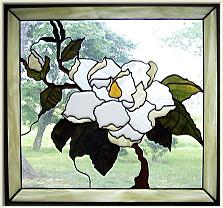

Södermalm i tid och rum
Magnolians vänner Ur Se på Söder, Olle Rydberg, 1986
Ett stycke upp i backen intill planket mot Vita Bergsparken växer ett magnoliaträd, det största i sitt slag så här
långt norrut. Det planterades 1933 av dåvarande trädgårdsmästaren Josef Johansson för att hedra Katarina
församlings stora välgörarinna Elsa Borg. Nedanför trädet står den staty över henne som Astri Taube skulpterat
och som invigdes 1971.
|
En kär tradition för söderbor och andra entusiaster har blivit att varje vår när magnolian slagit ut samlas vid detta vackra träd för att hylla årets magnoliapristagare. Förutom ett diplom överlämnas en magnoliaplanta åt pristagaren. Priset går till den av huvudstadens döttrar och söner, som i sin kulturgärning på ett förtjänstfullt sätt verkat för Stockholms och Söders väl.
|
 |
Mycket folk samlas till den återkommande ceremonin, som sköts av hembygdsföreningen i Sofia med ordföranden Anne Marie Rådström som talare och prisutdelare. För att höja stämningen sjunger den lika traditionella pensionärskören "Vintern rasat.. :" och andra kända vårsånger.
|
Evert Taube, journalisten Erik Lundegård (Signaturen Eld i DN) och Per Anders Fogelström är några kända namn som mottagit priset. 1981 var det Nicolai Gedda som hade den äran och 1982 naturfilmaren Jan Lindblad med förflutet på västra Södermalm. En populär pristagare var 1983 förre konserthuschefen Johannes Norrby. Alla har de det gemensamt att de bott på Södermalm.
Sofia kommunalförening är en hembygdsförening som startade redan 1917 och som idogt kämpat för att göra Åsöberget och Vita Bergen till kulturreservat, en ambition som inte varit utan framgång. Redan 1913 väckte Anna Lindhagen i Stockholms stadsfullmäktige en motion om bevarandet av gamla stugor och täppor på Söder. En utredning om saken väckte visst motstånd från berörda myndigheter som reagerade mot att slänga ut pengar på "rivningsfastigheter".
År 1939 beslöt man så att satsa resurser på att rusta upp de aktuella områdena, men först 19571958 började det lossna och leda till aktiva åtgärder. Det blev parkavdelningen och märkligt nog idrottsstyrelsen som fick ta hand om ärendet. Hur man nu kan blanda in idrott i sådana här sammanhang ...